Formal definition:
In mathematics, if given an open subset U of R^n (R^2 in this case) and a subinterval I of R, one says that a function u : U × I → R is a solution of the heat equation if
Using Finite Differences:
By combining different Taylor series expansions, we can obtain approximations of the first and second derivatives
Substituting in the original equation we get the discrete form of the Heat Equation
Where:
 